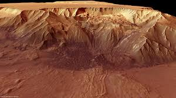
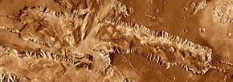

Valles Marineris
The "Grand Canyon of Mars" - one of the largest canyon systems in the solar system

Key Facts
- Length: 4,000 km (2,500 miles) - would stretch across the entire United States
- Width: Up to 200 km (120 miles)
- Depth: Up to 7 km (4.3 miles) - much deeper than Earth's Grand Canyon
- Location: Along the Martian equator
- Age: Estimated to have formed 3.5 billion years ago
- Named after: Mariner 9 spacecraft, which discovered it in 1971
Comparison with Earth's Grand Canyon
Valles Marineris
4,000 km long
7 km deep
Grand Canyon (Earth)
446 km long
1.6 km deep
Formation and Structure
Unlike Earth's Grand Canyon, which was carved by water erosion, Valles Marineris is believed to have formed primarily through tectonic processes. As the Tharsis region bulged upward due to volcanic activity, the crust stretched and fractured, creating the vast canyon system.
The canyon consists of several interconnected troughs, including:

Melas Chasma - One of the deepest sections

Candor Chasma - Contains layered deposits
Evidence of Water
While tectonic activity created the canyon, there is evidence that water played a role in shaping parts of it. Scientists have found minerals that typically form in the presence of water, as well as features that resemble dried-up river channels and lake beds.
Some researchers believe that Valles Marineris may have once contained lakes or even flowing rivers during Mars' warmer, wetter past. This makes it an important area for studying Mars' geological history and the potential for past life.
Learn More about Valles Marineris